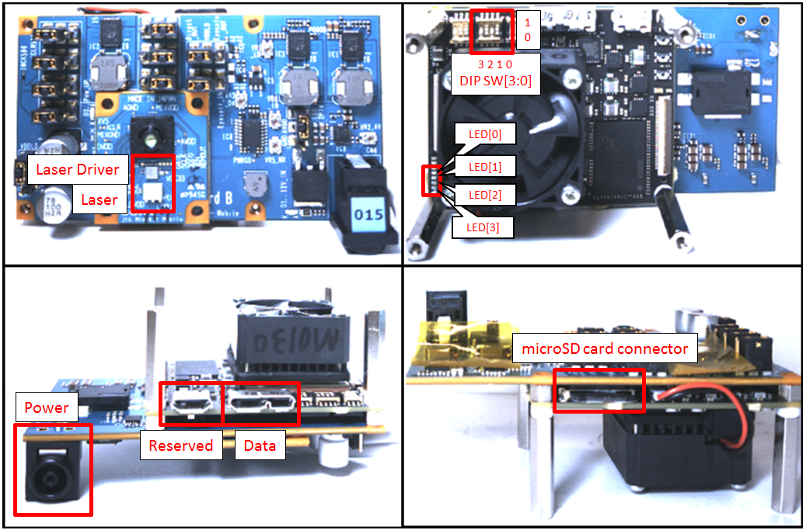

Physical setup¶
IMX316¶
IMX516¶

SSP-500 DIP SW setting¶
Change the DIPSW as the followng below.
| DIPSW=0x00-0x03 | are sample settings |
| DIPSW=0x04 | is configure for IMX456 |
| DIPSW=0x05 | is configure for IMX316 |
| DIPSW=0x06, 0x07 | No Sensor configure |
| DIPSW=0x08 | is configure for IMX516 |
| DIPSW=0x09-0x15 | No Sensor configure |
microSD memory card¶
The configuration files for SSP-500 are loaded from the microSD memory card. Insert the microSD memory card into the connector.
USB 3.0¶
The IMX456/IMX316/IMX516 Sony Mini-Kit can be tested on any platform having USB 3.0 connectivity.
Warning
The micro USB port is reserved for future use and hence cannot be used to connect the device on a host at the moment.
How to connect the board on the host
To connect the board to the host, connect the data cable the host USB3.0 port.
How to disconnect the board from the host
To safely disconnect the board from the host, unplug the data cable from the USB3.0 port.
Power supply¶
The IMX456/IMX316/IMX516 Sony Mini-Kit needs a AC adapter for the power supply.
AC adapter input/output specifications:
IMX456¶
Single illuminator¶
- INPUT : AC100 - 240 V, 50/60 Hz, 0.6 A
- OUTPUT: DC12 V, 2 A
Four illuminators¶
- INPUT : AC100 - 240 V, 50/60 Hz, 0.6 A
- OUTPUT: DC12 V, 5 A
IMX316/IMX516¶
- INPUT : AC100 - 240 V, 50/60 Hz, 0.75 - 0.4 A
- OUTPUT: DC12 V, 3 A
Note
When power is supplied , The LED[0] is flashing. After the configuration is completed , the LED stop flashing.The configuration takes for about 40 seconds.